Aspekt-Gruppen
Aspekt 3 Nektar · Augment +2 Nektar · S. 104–143Käfer bauen ISchnellstartsKäfer bauen IIStimmungenRätsel
Beißer
9 Aspekte · 12 Augmente · S. 108Sauger
9 Aspekte · 13 Augmente · S. 110Gucker
8 Aspekte · 13 Augmente · S. 112Panzer
9 Aspekte · 15 Augmente · S. 114Schleim
6 Aspekte · 14 Augmente · S. 116Fühler
6 Aspekte · 12 Augmente · S. 118Krabbelbeine
7 Aspekte · 13 Augmente · S. 120Greifer
8 Aspekte · 11 Augmente · S. 122Flügel
7 Aspekte · 12 Augmente · S. 124Drüsen
8 Aspekte · 12 Augmente · S. 126Schwänze
8 Aspekte · 12 Augmente · S. 128Statur
7 Aspekte · 10 Augmente · S. 130Hirn
7 Aspekte · 12 Augmente · S. 132Gefährten
6 Aspekte · 13 Augmente · S. 134Reittiere
6 Aspekte · 14 Augmente · S. 136Fertigkeiten
S. 144–151
Bewegen S. 148
FlitzenKletternGrabenSchleichenFliegen
Schwimmen Anfreunden S. 149
Quasseln
Prahlen
BlendenErschrecken
KümmernZähmen Finden S. 150

SpürenJagen
Denken
Stöbern
WerkelnKartierenRaufen S. 151
HauenBeißen
SchlitzenBrutzeln
TanzenSchützen
Übersicht wie bei Vaesen/Wildsea: jede Aspekt-Gruppe als Karte mit Buchbild (ungeschnitten) und Buchfarbe. Klick → Detailansicht (Entwurf 7). Kein Baum links – Seite beginnt mit Kachelraster.
Fertigkeiten mit den Original-Symbolen aus dem Buch (weiß auf Kategoriefarbe); Klick → Fertigkeit im Detail.